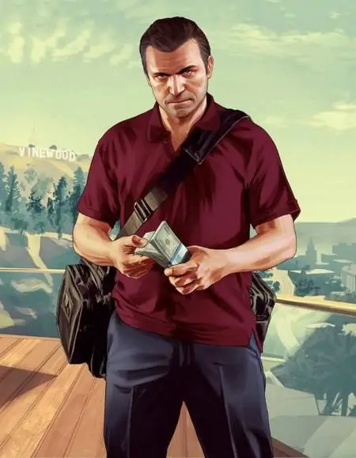
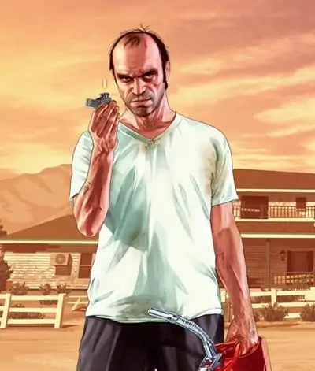
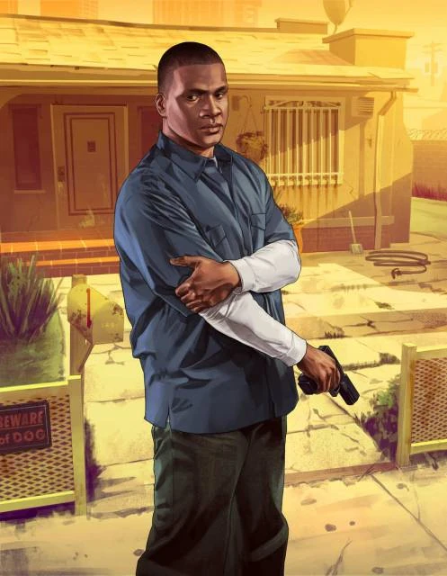

Introdução a Grand Thef Auto V
Grand Theft Auto V, também conhecido como GTA V, é um dos jogos mais populares e bem-sucedidos da franquia Grand Theft Auto, desenvolvida pela Rockstar Games. Foi lançado inicialmente em setembro de 2013 e está disponível para várias plataformas, incluindo PlayStation, Xbox e PC.
GTA V é um jogo de ação em mundo aberto, ambientado na fictícia cidade de Los Santos, inspirada em Los Angeles e seus arredores. O jogo permite que os jogadores assumam o controle de três personagens principais: Michael De Santa, um ex-assaltante de bancos que vive um estilo de vida luxuoso, Franklin Clinton, um jovem gangster em busca de oportunidades, e Trevor Philips, um criminoso psicopata e imprevisível.
A jogabilidade de GTA V oferece uma enorme liberdade aos jogadores, permitindo que eles explorem livremente o vasto mapa do jogo, realizem missões principais e secundárias, pratiquem atividades recreativas, como golfe e tênis, além de participarem de roubos, perseguições policiais e tiroteios épicos.
O modo multiplayer online, chamado de Grand Theft Auto Online, também é uma parte importante do jogo. Nele, os jogadores podem interagir com outros jogadores em um mundo persistente, formar gangues, participar de eventos e desafios, além de personalizar seus personagens e adquirir propriedades.
GTA V é conhecido por sua narrativa envolvente, personagens marcantes, humor irreverente, ação intensa e um mundo vasto e detalhado para os jogadores explorarem. O jogo recebeu inúmeros prêmios e continua a ser uma escolha popular entre os fãs de jogos de mundo aberto e ação até os dias de hoje.
Trailer do Jogo
Trailer 2 do Jogo
Conheça os personagens
Michael
Michael De Santa, anteriormente conhecido como Michael Townley, é um dos protagonistas de destaque em Grand Theft Auto V (GTA V), juntamente com Franklin Clinton e Trevor Philips. Ele é dublado por Ned Luke. 
Michael é um ex-assaltante de bancos e um criminoso notório que decidiu fingir sua própria morte para se aposentar e desfrutar de uma vida tranquila com sua família em Los Santos. No entanto, as complicações surgem quando seus relacionamentos familiares disfuncionais e seu passado criminoso o arrastam de volta ao mundo do crime. A história de Michael se concentra em como sua fachada de vida perfeita é desmoronada quando seus erros do passado e segredos obscuros voltam para atormentá-lo.
Enfrentando uma crise de meia-idade, Michael chega a um ponto de ruptura e está determinado a alcançar algo significativo em sua vida, ao mesmo tempo em que busca escapar de seu passado, encontrar liberdade e construir uma nova vida com sua família. Ele é um antigo amigo de Trevor Philips, outro protagonista, e durante a história, também desenvolve uma amizade e um papel de mentor para Franklin Clinton. Michael é casado com Amanda De Santa e é pai de Jimmy e Tracey.
Esses elementos da história de Michael em GTA V contribuem para uma narrativa envolvente e cheia de conflitos emocionais, à medida que ele enfrenta os desafios de conciliar sua vida criminosa anterior com sua busca por uma vida melhor e mais significativa.
Trevor
Trevor Philips é um personagem icônico da série Grand Theft Auto, aparecendo como um dos três protagonistas principais de Grand Theft Auto V, ao lado de Michael De Santa e Franklin Clinton, e também como um personagem central em Grand Theft Auto Online. Ele é dublado por Steven Ogg. 
Trevor é um criminoso conhecido e ex-ladrão de bancos, com um passado complexo. Após fingir sua morte e se aposentar do crime, ele estabelece sua própria empresa, a Trevor Philips Enterprises, que lida com tráfico de drogas e contrabando de armas no Blaine County. Ele conta com a parceria de Ron Jakowski e Wade Hebert, que trabalham para ele. Além disso, Trevor é o antigo e melhor amigo de Michael, acreditando por anos que ele estava morto. Sua personalidade é marcada por comportamento imprudente e agressivo, mas também é leal e possui um profundo respeito por aqueles próximos a ele.
A história de Trevor aborda as consequências de suas ações, tanto para si mesmo quanto para seus amigos. Ele precisa confrontar o passado de Michael e lidar com suas próprias escolhas. Ao longo da narrativa, ele também desenvolve uma amizade e uma espécie de papel de mentor para Franklin. A história de Trevor é repleta de emoções intensas, dilemas morais e revelações impactantes, tornando-o um dos personagens mais cativantes de GTA V.
Com sua personalidade excêntrica e imprevisível, Trevor adiciona um elemento de caos e imersão à experiência do jogo. Sua presença dinâmica e sua complexidade tornam suas interações e suas histórias uma parte fundamental da experiência geral de Grand Theft Auto V.
Franklin
Franklin Clinton é um personagem da série Grand Theft Auto que aparece como um dos três protagonistas em Grand Theft Auto V, ao lado de Michael De Santa e Trevor Philips. Ele também é um personagem importante em Grand Theft Auto Online, como parte da atualização "The Contract". Ele é dublado por Shawn Fonteno
Franklin cresceu no sul de Los Santos e era amigo de Tanisha Jackson, Lamar Davis e Tonya Wiggins. Todos eles estavam destinados a se tornarem gangsters como suas famílias, mas Franklin e Tanisha queriam mais do que isso.
Franklin namorava Tanisha, mas ainda estava envolvido com gangues e vivia na pobreza. Ele trabalhava em uma concessionária de carros de luxo para Simeon Yetarian antes de se envolver em crimes profissionais. Um dia, enquanto estava recuperando um carro, ele encontrou Michael, o que levou a uma série de eventos e à eventual amizade entre eles.
A vida de Franklin dá uma reviravolta quando ele conhece Michael e se envolve em roubos de alto risco e atividades criminosas. Ele também cruza o caminho de Trevor e Lamar, o que resulta em encontros perigosos com gangues e indivíduos poderosos.
Ao longo do jogo, Franklin enfrenta escolhas que determinam o destino de seus amigos e seu próprio futuro. O jogador pode escolher finais diferentes, incluindo um em que Franklin mata Trevor, outro em que ele mata Michael ou um em que todos se unem para derrotar seus inimigos.
jornada de Franklin é repleta de reviravoltas, traições e dilemas morais enquanto ele navega pelo submundo criminoso de Los Santos.
História do Jogo
A história de Grand Theft Auto V (GTA V) se passa na fictícia cidade de Los Santos e acompanha a vida de três personagens principais: Michael De Santa, Franklin Clinton e Trevor Philips.
Michael é um ex-assaltante de bancos que agora vive uma vida tranquila sob o programa de proteção a testemunhas. Entretanto, ele se sente entediado e insatisfeito com a monotonia de sua nova vida. Michael tem uma família problemática, incluindo sua esposa infiel, Amanda, e seus filhos rebeldes, Jimmy e Tracey.
Franklin, por sua vez, é um jovem ambicioso que busca uma saída das ruas e do mundo do crime. Ele trabalha como um ladrão de carros para um negociante corrupto, mas sonha em ter uma vida melhor. Franklin encontra Michael em uma tentativa de roubo de carro, e a partir desse encontro, eles desenvolvem uma relação de mentor e aprendiz.
Trevor é um personagem explosivo e imprevisível, antigo parceiro de crimes de Michael. Ele mora em um remoto trailer no deserto de Blaine County e é conhecido por sua natureza violenta e sádica. Trevor se envolve na trama quando descobre que Michael está vivo e decide se reunir com ele, desencadeando uma série de eventos caóticos.
À medida que a história se desenrola, os três protagonistas se envolvem em uma série de assaltos perigosos, confrontos com gangues rivais e uma luta pelo poder em Los Santos. A trama aborda temas de lealdade, traição, vingança e busca por redenção, apresentando reviravoltas e revelações surpreendentes ao longo do caminho.
Além da história principal, GTA V também apresenta missões secundárias, atividades recreativas, eventos aleatórios e um vasto mundo aberto para os jogadores explorarem. A combinação da narrativa envolvente, ação intensa e personagens memoráveis faz de GTA V uma experiência cativante para os jogadores.
GTA Online
O GTA Online é uma versão multijogador em mundo aberto do jogo Grand Theft Auto V, desenvolvida pela Rockstar North e lançada em outubro de 2013. Ele é um componente separado do jogo principal e permite que os jogadores interajam e joguem em um ambiente online massivo, compartilhando o mundo fictício de Los Santos com outros jogadores.

No GTA Online, os jogadores têm a liberdade de explorar a cidade, participar de atividades e missões, competir em desafios, adquirir propriedades, personalizar seus personagens e veículos, e interagir com outros jogadores em diversos modos de jogo, como corridas, assaltos, batalhas e muito mais. O mundo online é constantemente atualizado com conteúdo novo, como eventos, missões, veículos e opções de personalização.
O GTA Online se tornou extremamente importante para o GTA V e para a franquia Grand Theft Auto como um todo. Ele se tornou um enorme sucesso comercial e uma das experiências multijogador mais populares da indústria dos videogames. O jogo online estendeu significativamente a vida útil do GTA V, mantendo os jogadores engajados e proporcionando uma experiência duradoura após a conclusão da campanha para um jogador.
O sucesso do GTA Online também trouxe uma fonte contínua de receita para a Rockstar Games, com a venda de moedas virtuais no jogo, conhecidas como "Shark Cards". Além disso, a popularidade do GTA Online contribuiu para a crescente base de fãs da franquia e gerou uma comunidade ativa e dedicada de jogadores.
Em resumo, o GTA Online é uma parte essencial do GTA V, oferecendo aos jogadores uma experiência online expansiva, interativa e socialmente conectada. Ele desempenha um papel fundamental na longevidade e sucesso contínuo do GTA V e tem um impacto significativo na popularidade e relevância da franquia Grand Theft Auto.
Premiações
- Jogo do Ano (2013)
- Melhor Direção (2013)
- Melhor Narrativa (2013)
- Melhor Design de Som (2013)
- Melhor Jogo de Ação/Aventura (2013)
- Melhor Trilha Sonora Original (2013)
BAFTA Games Awards:
- Melhor Jogo Britânico (2014)
- Melhor Design (2014)
- Melhor Multijogador (2014)
- Melhor Performance (Steven Ogg como Trevor) (2014)
Golden Joystick Awards:
- Jogo do Ano (2013)
- Melhor Jogo de Ação (2013)
- Melhor Jogo Multijogador (2013)
- Melhor Trilha Sonora (2013)
D.I.C.E. Awards:
- Jogo do Ano (2013)
- Melhor Jogo de Ação (2013)
- Melhor Direção de Jogo (2013)
- Melhor Trilha Sonora Original (2013)
The Game Awards:
Essas são apenas algumas das premiações mais notáveis recebidas por GTA V. O jogo foi amplamente aclamado pela crítica e recebeu reconhecimento por sua narrativa, jogabilidade, design de mundo aberto, trilha sonora e elementos multijogador.